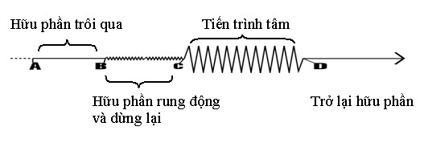
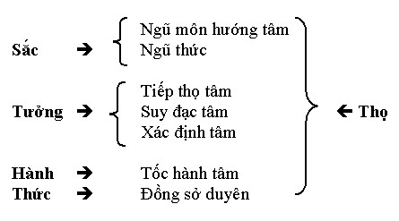

|
Thực Tại Hiện Tiền Viên Minh |
|
BuddhaSasana Home Page |
Vietnamese, with Unicode Times font |
|
|
Thực Tại Hiện Tiền Viên Minh |
|
[06] TIẾN TRÌNH TÂM 23-11-93 Trong lần trước, chúng ta đã nói về sự vận hành của 18 giới. Đến đây có lẽ chúng ta có thể đã thấy rõ nguyên nhân phát sanh đau khổ và phiền não. Đâu là khổ đế, đâu là tập đế, chắc không ai hoài nghi nữa phải không? Cũng trong sự vận hành này, chúng ta đã thấy rõ sự sanh khởi của ngũ uẩn. Ngũ uẩn không phải là một cái gì có sẵn, như là một bản ngã nói năng và hành động, mà ngũ uẩn khi sanh khi diệt thay đổi luôn luôn tùy theo cái tâm khi nó tương giao với ngoại giới. Chúng ta cũng so sánh, đối chiếu mối liên hệ giữa ngũ uẩn và 7 biến hành tâm sở, tức là những tâm sở chánh yếu diễn ra trong tất cả tâm. Tâm nào cũng phải có mặt 7 tâm sở này: xúc, thọ, tưởng, tư, nhất tâm, mạng căn, tác ý. Sở dĩ chúng ta đem nhiều pháp ra so sánh là để liên hệ các pháp Đức Phật dạy lại với nhau. Bởi vì khi thì chúng ta học pháp này, khi học pháp khác, rất là tản mạn, tưởng giữa chúng chẳng có mối quan hệ nào cả. Không phải thế, chúng liên hệ rất là mật thiết, và nhờ vậy khi mình thấy pháp này là thấy được pháp kia. Dầu là một câu kệ Đức Phật dạy, vẫn bao hàm hết giáo lý đạo Phật. Đây là điều mà quý vị để ý kỹ sẽ thấy. Ngược lại mỗi từ ở trong mỗi pháp thì lại phải hiểu tùy trường hợp. Ví dụ chữ "pháp", chữ "sắc" mà chúng ta đã từng khảo sát hôm trước. Hôm nay, chúng ta nói về tiến trình tâm, tiếng Pāli gọi là Citta vīthi. Vīthi nghĩa là lộ trình, là diễn tiến, một dòng diễn tiến. Citta là tâm. Tâm tức là thức. Có 6 thức. Mặc dù 900 năm sau Đức Phật Niết Bàn, Thế Thân giới thiệu thêm 2 thức là Mạt-na và A-lại-da, nhưng 2 thức này không có gì mới lạ, nó nằm trong tiến trình tâm ngang qua 6 thức mà chúng ta sắp nói đến. Nói có 6 thức là tùy hiện tượng mà gọi tên khác nhau thôi, sự thực khi một tâm hiện khởi nó diễn tiến qua một lộ trình gọi là tiến trình tâm. Ví như dòng điện, tác dụng lên bóng đèn thì sáng, tác dụng lên máy quạt thì cánh quạt quay, tác dụng lên bàn ủi thì sinh nhiệt, nhưng cũng chỉ do một dòng điện mà thôi. Dòng điện đó ví như dòng tâm hiện khởi ngang qua các căn vậy. Cũng ví như nước và sóng, gió nhẹ tác động lên nước thì sinh sóng lăn tăn. Bão lớn tác động lên nước thì sinh ra sóng thần, nhưng chỉ là nước đó thôi. Tùy duyên mà gọi. Vậy khi nói tâm hay thức chúng ta đừng câu nệ ở nơi cách phân loại mà chỉ quan sát ngay nơi cái tâm đang hiện khởi để thấy diễn biến của nó. Duy Thức học nói có 8 thức. Abhidhamma Nguyên Thủy nói tiến trình tâm ngang qua 5 môn có 9 giai đoạn và ngang qua ý môn chỉ có 4 giai đoạn. Từ "giai đoạn" tôi dùng đây tương đương với chữ thức trong 8 thức của Duy Thức học. Cũng theo Abhidhamma, nếu đứng về phương diện cõi giới thì có 4 loại tâm: dục giới tâm, sắc giới tâm, vô sắc giới tâm, siêu thế tâm. Nếu đứng về phương diện nhân quả, thiện, bất thiện, vô nhân, bất động, duy tác v.v... thì có tới 89 tâm hoặc 121 tâm. Nếu đứng về phương diện hiện khởi qua các căn thì nói có 6 thức. Vậy tùy tác dụng, tùy phương diện mà gọi thôi chứ đừng nên chấp trước. Quan trọng ở chỗ mình thấy được sự vận hành của tâm như thế nào chứ không cần gọi tên nó làm gì. Giống như một chậu nước, mình lấy cái ly mà đong thì 10 ly, nhưng lấy 1 cái gallon mà đong thì chỉ có ½ gallon, phải không? Nửa gallon bằng 10 ly, 10 ly bằng 1 chậu. Cả 3 đều đúng. Vì thế không nên tranh cãi về con số thống kê tâm làm gì, mà quan trọng là mình phải thấy diễn biến của tâm nơi chính tâm đang vận hành. Vậy chúng ta thử chú ý theo dõi trình tự diễn biến của tâm như thế nào. Đây là sự kiện tâm khá vi tế, không nên lý luận mà chỉ chú tâm quan sát. Diễn biến của 1 tâm sinh diệt như thế này: Dòng tâm thức khi ở trạng thái tĩnh lặng, chưa có tác động của 1 đối tượng nào hết thì nó trôi chảy âm thầm lặng lẽ, ẩn tàng trong chiều sâu của sự sống nên gọi là hữu phần (hữu phần gọi là bhavanga: anga là phần, bhava là hiện hữu, sự sống). Hữu phần là phần tiềm ẩn duy trì sự hiện hữu trôi chảy liên tục của dòng tâm. Khi mình ngủ hoặc khi mình bất tỉnh thì lúc đó không có một đối tượng gì tác động để tâm mình khởi lên cả (trừ lúc chiêm bao). Tâm đang ở trạng thái tĩnh lặng - tĩnh lặng mà luôn luôn trôi chảy. Cho nên đúng ra phải nói là bhavanga atīta tức là hữu phần cứ trôi qua, trôi qua, tức là trôi chảy liên tục. Duy Thức gọi là "hằng chuyển như bộc lưu". Khi hữu phần đang trôi chảy như vậy, chợt có một đối tượng tác động vào khiến hữu phần này rung động lên hai lần gọi là bhavanga calana. Khi hữu phần rung động thì cái dòng trôi chảy ấy liền dừng lại. Không phải là dừng lại dòng trôi chảy mà là dừng lại tình trạng trôi chảy ẩn tàng lặng lẽ, nên gọi là hữu phần dừng lại: bhavanga upaccheda. Hữu phần dừng lại và tâm bắt đầu khởi lên qua các căn để thu nhận, đánh giá, phản ứng v.v... trên đối tượng tác động:  Bình thường hữu phần trôi qua ở trạng thái tĩnh (từ A đến B). khi có một đối tượng (sắc, thanh, hương, vị, xúc, pháp) tác động vào thì hữu phần rung động 2 lần rồi dừng lại (từ B đến C) và bắt đầu khởi tâm (tại C). Tiến trình tâm thực sự xảy ra (từ C đến D) rồi trở lại trạng thái thầm lặng trôi chảy của hữu phần. Ở đây, chúng ta cần biết thêm một tư tưởng của Lão Tử: "Trí hư cực, thủ tịnh đốc, vạn vật tịnh tác, ngô dĩ quan phục, phù vật vân vân, các phục quy kỳ căn, quy căn viết tịnh, tịnh viết phục mạng, phục mạng viết thường, tri thường viết minh, bất tri thường vọng tác hung". Nghĩa là: "Nếu ta sáng suốt định tĩnh mà quan sát thì thấy vạn vật (tức là các tâm pháp) khởi lên rồi chúng lại trở về. Té ra tất cả các pháp... đều như vậy, cứ khởi lên rồi trở về gốc. Trở về gốc gọi là tịnh. Tịnh gọi là phục mạng. Phục mạng gọi là thường. Biết cái thường này là minh. Không biết cái thường này là vọng khởi lung tung". Câu này của Lão Tử cũng khuyên ta nên tĩnh lặng soi chiếu cái tâm sinh diệt, đi về qua lộ trình của nó. Ba giai đoạn của hữu phần ở trên (hữu phần trôi qua, hữu phần rung động và hữu phần dừng lại) có thể gọi theo phân tâm học là vô thức hoặc tiềm thức, chỉ đóng vai trò chuẩn bị cho tiến trình tâm chứ tâm chưa thật sự khởi. Ngay khi hữu phần dừng lại, tâm thật sự khởi lên theo trình tự như sau (đối với mắt, tai, mũi, lưỡi, thân): 1 sát-na - Ngũ môn hướng tâm (Pañcadvār'āvajjuna). Nếu kể cả 3 sát-na của gai đoạn hữu phần thì toàn bộ tiến trình diễn ra trong 17 sát-na, nhưng nếu chỉ kể phần chính yếu thì chỉ cần 14 sát-na. Tuy nhiên tiến trình sẽ lập đi lập lại trên cùng đối tượng rất nhiều lần. Giải Thích Các Giai Đoạn Của Tiến Trình Trên đây là tiến trình tâm diễn ra qua 5 cửa (mắt, tai, mũi, lưỡi, thân). Tiến trình qua ý môn chúng ta sẽ nói sau. Tuy nhiên dù tiến trình qua ngũ môn vẫn có sự tham dự của ý thức. - Ngũ môn hướng tâm: 3 giai đoạn hữu phần cũng được tính vào trong tiến trình nhưng thực ra đến ngũ môn hướng tâm thì tâm mới thực sự khởi. Ngũ môn hướng tâm chỉ là phản xạ tự nhiên của mắt, tai, mũi, lưỡi, thân trên đối tượng tương ứng. Cụ thể như khi một người nằm ngủ, bỗng có tiếng động làm anh ta giật mình, toàn thân người ấy bị đánh thức và hướng đến đối tượng. Nhưng thật ra vì là tiếng động nên chỉ có nhĩ môn thật sự hướng đến đối tượng. Nếu là hình ảnh thì nhãn môn hướng đến, nếu là sự đụng chạm thì thân môn hướng đến v.v... - Ngũ thức: khi một trong 5 môn hướng về đối tượng thì thức của môn ấy liền cộng tác vào. Ví dụ nếu đối tượng là tiếng động thì nhĩ thức cộng tác. Vì vậy đến đây 1 trong 5 thức khởi tác dụng. Có đôi khi nhiều thức cùng khởi một lần, như vừa thấy vừa nghe chẳng hạn. - Tiếp thọ tâm: sau khi một trong 5 thức khởi lên thì tâm tiếp nhận đối tượng. Giả sử như nhãn thức khởi lên thì sự tiếp nhận sẽ giống như chiếc máy hình bấm nút để thu hình. - Suy đạc tâm: sau khi thu hình vào, đây là lấy mắt làm điển hình, thì nó hiện lên trên phim (ví dụ máy hình) từng chi tiết của đối tượng, giai đoạn này mang tính phân tích. - Xác định tâm: sau khi ghi nhận từng chi tiết một cách phân tích, tâm bắt đầu tổng hợp các chi tiết để hình thành toàn diện đối tượng, và xác định đó là hình gì. Ba giai đoạn này nói về ý thức nhưng tương đương với tưởng trong ngũ uẩn, chỉ xảy ra trong 3 sát-na-tâm. - Tốc hành tâm: đây là giai đoạn quan trọng hình thành sự tạo tác của tâm kéo dài đến 7 sát-na. Nó chính là hành trong ngũ uẩn. Hầu hết các tâm sở quần tụ ở đây tùy theo tính chất thiện, bất thiện, bất động hay siêu thế tâm. Mạt-na thức nằm trong tốc hành tâm này. - Đồng sở duyên: diễn ra trong 2 sát-na tâm, nó giữ vai trò như A-lại-da trong Duy Thức để ghi nhận lại tiến trình tâm vừa xảy ra, nhất là giai đoạn tốc hành tâm. Đồng sở duy ên tương đương với thức uẩn trong sự tập khởi của ngũ uẩn, về phương diện ghi lại chủng tử.Tất cả các giai đoạn tiến trình tâm này đều có sự hiện diện của thọ. So Sánh Tiến Trình Tâm Với Ngũ Uẩn Thực ra tiến trình tâm cũng chính là tiến trình ngũ uẩn được triển khai chi tiết hơn.  Vì cách phân giai đoạn khác nhau (một bên là 5, một bên là 7 giai đoạn) nên sự so sánh phải rất tế nhị: - Sắc uẩn gồm ngũ môn hướng tâm và ngũ thức. Đồng sở duy ên ghi lại tiến trình rồi chìm vào trạng thái tiềm ẩn trong hữu phần. Đồng sở duyên giữ vai trò năng tàng hoặc năng huân (cất chứa) còn hữu phần giữ vai trò sở tàng hoặc sở huân (chỗ cất chứa).Trước khi tâm khởi lên tiến trình là hữu phần. Sau khi tiến trình chấm dứt cũng trở lại hữu phần, do đó hữu phần tương đương với căn bản thức trong Duy Thức. Chúng ta cần lưu ý một điều là đối với kẻ phàm phu, tiến trình tâm không khác ngũ uẩn, tuy nhiên khi tốc hành tâm được hướng dấn bởi trí tuệ giải thoát, thì tiến trình tâm này không tác thành uẩn, ví dụ tiến trình tâm siêu thế. Tiến trình tâm cũng không nhất thiết phải trải qua 17 sát-na. Tùy theo đối tượng mà tiến trình tâm có thể diễn tiến đầy đủ hoặc chấm dứt nửa chừng. - Nếu là một đối tượng rất lớn (atimahanta) thì tiến trình diễn ra 17 sát-na: * Hữu phần trôi qua: 1 sát-na Tổng cộng: 17 sát-na Đối tượng rất lớn tức l à đối tượng gây sự chú ý hoặc gây ấn tượng mạnh, khiến tâm phản ứng mạnh. Ví dụ đối tượng làm chúng ta sợ hãi, tức giận hay hoan hỷ vui mừng, v.v...- Nếu là một đối tượng lớn (mahanta) thì tiến trình chấm dứt sau tốc hành tâm, nghĩa là đồng sở duyên không khởi lên. Như vậy nó chỉ diễn ra trong 15 sát-na. Đối tượng lớn tức l à đối tượng không gây chú ý nhiều lắm, khiến tâm tuy có phản ứng nhưng rồi sau đó quên đi không ghi lại gì cả. Ví dụ một vị thầy ra đường thỉnh thoảng gặp một vài học sinh chào hỏi, ông ta cũng mỉm cười đáp lại, nhưng sau đó ông không nhớ gì hết.- Nếu đối tượng nhỏ (paritta) thì tiến trình tâm chỉ tồn tại ngang xác định tâm, tốc hành tâm không khởi lên. Trong trường hợp này xác định tâm kéo dài 3 sát-na rồi trở lại hữu phần. Như vậy tiến trình tâm chỉ diễn ra từ 10 đến 11 sát-na thôi. Ví dụ: khi đi ngoài đường, chúng ta vẫn thấy hàng cây hai bên đường, xe cộ, người đi lại, nhưng chúng ta chỉ thấy vậy thôi chứ không chú ý và không phản ứng gì cả. - Nếu đối tượng rất nhỏ thì hữu phần chỉ rung động rồi trở về trạng thái yên tĩnh, chứ tiến trình tâm không khởi lên. Ví dụ khi đang ngủ, có tiếng động khiến chúng ta giật mình nhưng vẫn ngủ lại như thường. Qua sự vận hành của các tiến trình tâm trên, chúng ta thấy rằng tốc hành tâm và đồng sở duyên có thể không khởi tùy đối tượng. Mạt-na thức là một phần của tốc hành tâm và A-lại-da thức chính là đồng sở duyên. Vậy không phải chỉ 6 thức mới sinh diệt mà công năng của Mạt-na và A-lại-da cũng vô thường sinh diệt tùy lúc. Không nên chủ trương có một cái tâm thường tồn mà rơi vào bản thể luận thường kiến. Xin quý vị lưu ý cho như vậy. Còn một điểm cần lưu ý là trong một khoảng thời gian có thể xảy ra nhiều tiến trình tâm có đối tượng khác nhau. Những tiến trình tâm này không phải xảy ra cùng lúc mà chúng xen kẽ với nhau. Ví dụ: ta đang xem ti vi, bỗng có nhiều tiếng nổ lớn bên ngoài. Thế là chúng ta hướng chú ý ra bên ngoài, nhưng khi biết đó chỉ là tiếng pháo, chúng ta lại tiếp tục chú ý xem ti vi. Như vậy xem ti vi và nghe tiếng nổ là 2 tiến trình tâm khác nhau xen kẽ với nhau. Một ví dụ khác: một ông chủ nọ có 5 người thư ký đánh máy, ông đọc cho mỗi người đánh máy mỗi văn thư khác nhau. Đọc cho người thứ nhất một câu, rồi người thứ hai, thứ ba, thứ tư, thứ năm. Xong rồi ông trở lại đọc câu thứ hai cho người thứ nhất, thứ hai, v.v... cứ thế cho hết 5 văn thư cho năm người với 5 nội dung khác nhau. Ông chủ đó trong một khoảng thời gian đã sử dụng 5 tiến trình tâm xen kẽ với nhau mà chẳng có cái nào lẫn lộn cái nào, cái nào cũng nhất tâm, nhất quán cái đó. Đó là nói 2 tâm khác đối tượng xen kẽ lẫn nhau. Có nhiều khi 2 tâm khác loại cũng xen kẽ lẫn nhau. Ví dụ khán giả xem hai võ sĩ đánh nhau trên võ đài. Thường thường khán giả thiên vị bên võ sĩ A hoặc võ sĩ B, cho nên khi thì hoan hô, khi thì tức giận. Như vậy tâm thương ghét, vui buồn, mừng giận cứ xen kẽ lẫn nhau trong cùng cú đánh của 2 đối thủ. Như vậy, cái tâm luôn luôn vô thường theo các tiến trình tâm liên hệ với những đối tượng của chúng, không những thế trong mỗi tiến trình cũng diễn ra sự biến đổi vô thường, và ngay trong mỗi sát-na tâm cũng đã có sinh-trụ-diệt tiếp nối liên tục. Vậy thì, quả là "quá khứ tâm bất khả đắc, vị lai tâm bất khả đắc, hiện tại tâm bất khả đắc" có đúng vậy không? Chúng ta đã nói đến sự liên hệ giữa 7 biến hành tâm sở, ngũ uẩn và tiến trình tâm. Nhưng còn một số diễn biến khác cũng liên hệ mật thiết với những điều vừa nói trước, đó là Thập nhị nhân duyên. -ooOoo- |
Chân thành cám ơn anh Lê Trung Thành đã gửi tặng bản vi tính (Bình Anson, tháng 1-2004)
[Trở
về trang Thư Mục]
last updated:
08-01-2004